Slab irrigation, end to end
A measured slab-irrigation field guide: room layout, common dripper runtimes, rooting-in, P0-P3 control, crop-stage steering, EC management and finish.
What this paper is
A measured field protocol for rooting blocks into metre slabs, programming the daily irrigation curve, managing root-zone EC and carrying the crop through finish.
The operating sequence is simple: establish roots with a vegetative bias, set flowers with a generative bias, return to vegetative bulking after stretch slows, then finish with lower root-zone EC and a controlled larger dryback. Calendar days are defaults. Plant response, representative runoff and comparable-VWC sensor readings decide when to move.[13][16]
Change one steering lever at a time, then observe a complete photoperiod. Setting ends when vertical stretch clearly slows. Bulking ends when flower expansion slows and ripening signals dominate.
Accuracy, self-review, and grain-of-salt notes
We've gone to great lengths to keep these guides honest. One of the main ways we do that is self-review: we actively look for claims that are subjective, only lightly backed by literature, or based on grower practice rather than a controlled study — and we call those out instead of dressing them up as settled science.
Often there simply is no paper for the decision you're making. In those cases we're drawing on what other growers report and what has worked in our own rooms. That can still be useful — but it is not a lab proof. Do what works for your plants, your room, and your meters. If a table disagrees with your crop, believe the crop and log the difference.
- Core definitions and measurement units used in the paper
- Safety-critical limits where occupational or standards sources are cited
- Numeric stage targets (light, climate, feed) as starting bands, not laws
- SOPs that work in many rooms but need your genetics and meters
- Any single-number 'guaranteed' yield or potency claim without a multi-site trial
- Controller setpoints copied from another facility without re-calibration
See something glaringly wrong? Tell us and we'll fix it. Please open a GitHub issue with the paper name and what looks off (include a source if you have one): Report an accuracy issue. Local law, labels, and licences always override any recipe here. Inline notes labelled grain of salt flag the highest-risk over-trust points in the text.
The working setup
Program from measured volume and measured flow. Brand labels and nominal emitter ratings do not tell you what reached the plant.
Three-plant slab, roots and drainage
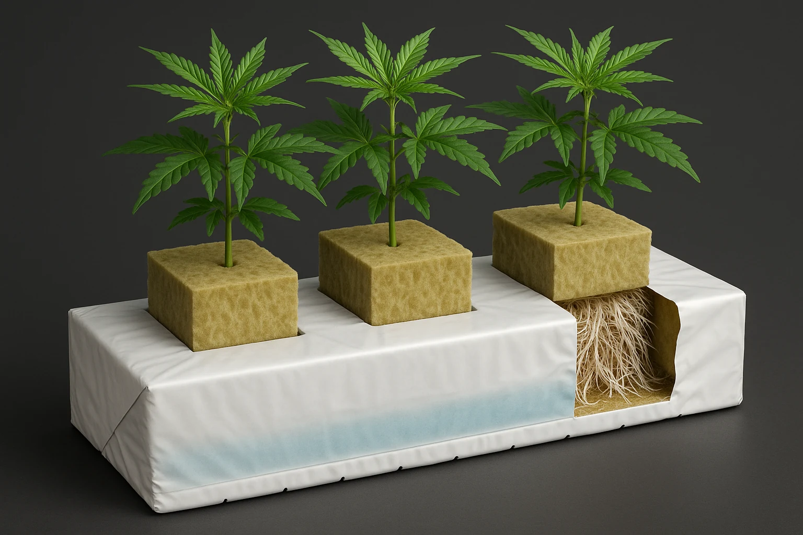
Seven one-metre slabs use 7.0 m of a 7.6 m table, leaving 300 mm at each end when centred. The clear-centre option carries 14 slabs or 42 plants per table—42 slabs or 126 plants across three tables. The three-row options carry 21 slabs or 63 plants per table—63 slabs or 189 plants room-wide. At the working dimensions, two 150 mm slab rows plus one 203 mm inflated tube use about 503 mm; three slab rows plus two tubes use about 856 mm, leaving about 344 mm for gaps, edges, irrigation hardware and brackets. Every tube has a dedicated 200 mm inlet fan. Outlet-hole diameter and spacing are site-balanced from measured pressure and airflow; confirm actual wrappers, tube inflation, fan performance, light mounts and access before committing.
Clear-centre under-canopy layout
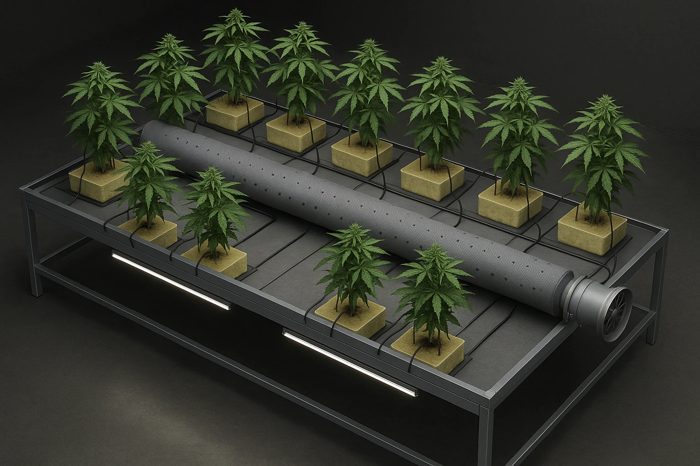
Normal dripper configurations
Every runtime below delivers a 3% shot of about 221 mL or a 5% shot of about 368 mL into the assumed 7.35 L root-zone allocation. Nominal flow is only the first calculation. Catch-test representative outlets at operating pressure and replace the table runtime with the measured result.
Dripper delivery chain
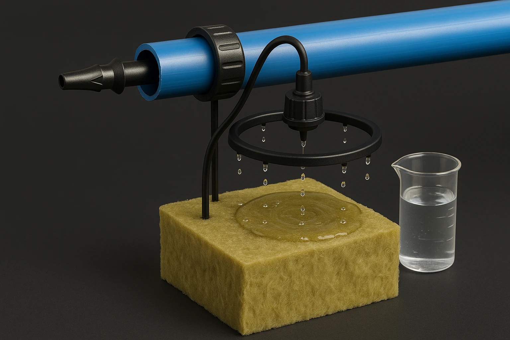
| Configuration | Total nominal flow | 3% shot · 221 mL | 5% shot · 368 mL | Use and tradeoff |
|---|---|---|---|---|
| 1 × 2 L/h | 2.00 L/h | 6:37 | 11:02 | Low-flow single outlet; long events and no emitter redundancy |
| 2 × 2 L/h | 4.00 L/h | 3:18 | 5:31 | Recommended starting pair where the block-top hardware supports two independent wetting points |
| 1 × 4 L/h | 4.00 L/h | 3:18 | 5:31 | Simple ring-fed layout; the emitter remains a single point of failure |
| 2 × 4 L/h | 8.00 L/h | 1:39 | 2:45 | Short events; verify pump ramp, pressure regulation and minimum reliable valve time |
| 2 × 0.3 GPH | 2.27 L/h | 5:50 | 9:43 | Common low-flow imperial pair with useful redundancy and long wetting time |
| 2 × 0.5 GPH | 3.79 L/h | 3:30 | 5:50 | Common imperial pair close to 4 L/h total |
| Formula: runtime seconds = shot mL ÷ (total measured L/h × 1000 ÷ 3600). At 4 L/h per plant, the 42-plant clear-centre layout requires 168 L/h per table or 504 L/h for three tables; a 63-plant layout requires 252 L/h per table or 756 L/h room-wide. | ||||
Measured shot volume and runtime
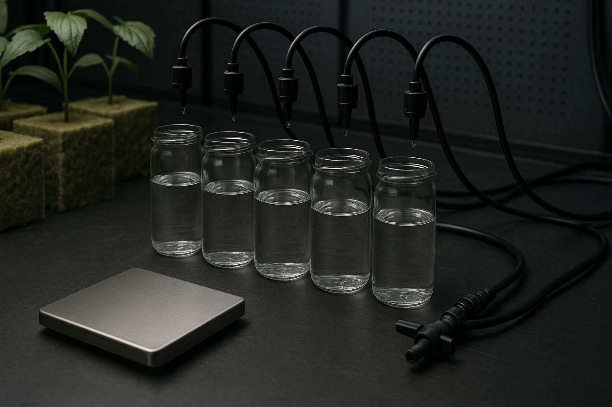
Catch-test outlets near and far from the manifold, at the start and end of the longest active zone. Inspect filters and flush laterals to the emitter manufacturer's specification. A single dry plant among normal neighbours is an outlet or contact fault until proven otherwise.
Definitions that prevent bad programming
A 40% relative dryback from a 60% peak is a 24-point controller dryback. From a 70% peak it is 28 points. Convert the unit, then enforce the room's recovery floor.
VWC, field capacity and dryback units
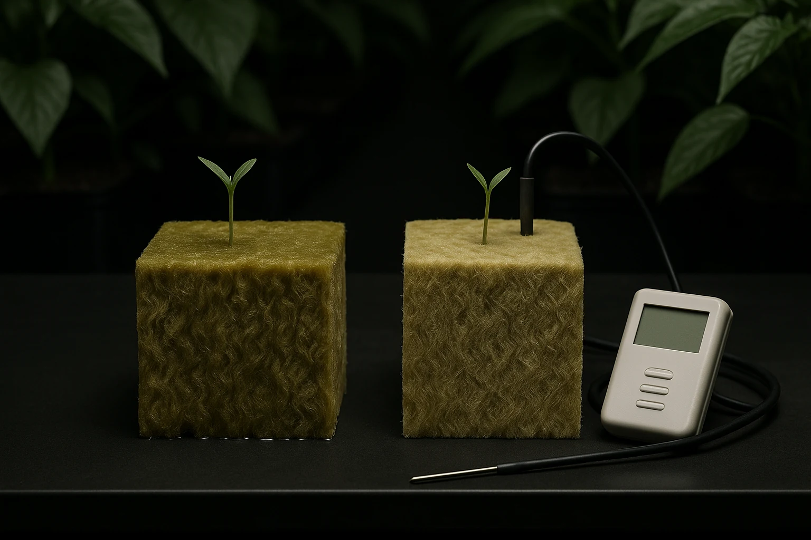
Why a soaked slab pulls your block dry
The most counter-intuitive fact in slab growing: a fully saturated slab actively drains the block sitting on it.
Stone wool holds nearly all of its water at suctions of just a few centimetres of head, and its hydraulic conductivity near saturation is very high.[5][6] The practical consequence is that water content stratifies sharply with height above the drain plane — wet at the bottom, dry at the top — in any connected column of fibre.[7]
Set a Hugo on a slab with full contact and you have created one connected column, and the block is now its highest point. At equilibrium the block must end up driest — the slab's extra height pulls the block's water down into itself. Grodan states this directly: the slab “extracts moisture from the block”, and this is precisely why drip must keep running on the block several times per day until roots have penetrated the slab.[1] Meanwhile the plant is transpiring out of that same block. The block is being drained from below and above at once.
Connected block-slab water column
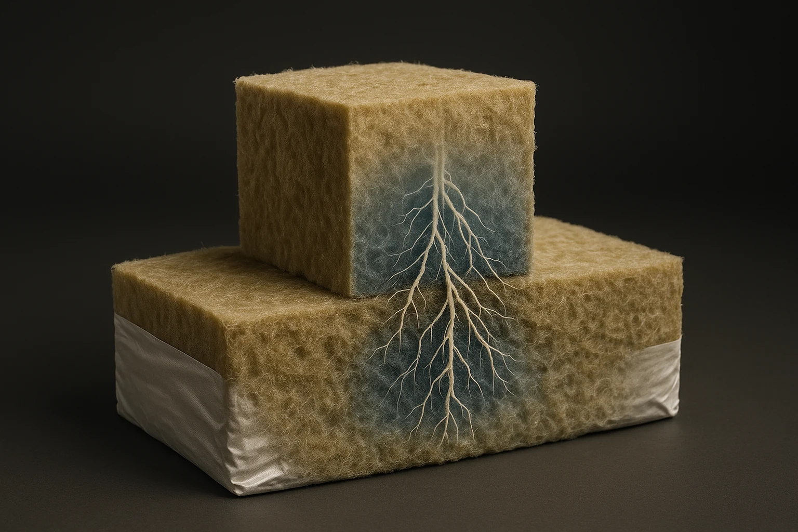
Vertical VWC gradient and sampling volume
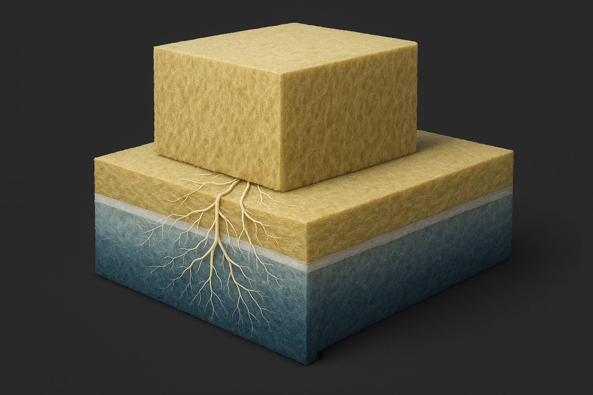
This is why the stage you can see with your hands — top block feels light, slab feels soaked — is not a watering error to fix by irrigating the slab. It is the physics working as designed, and the answer is to feed the block, frequently, until the roots are established in the slab.[1][14]
Representative and misleading sensor placements
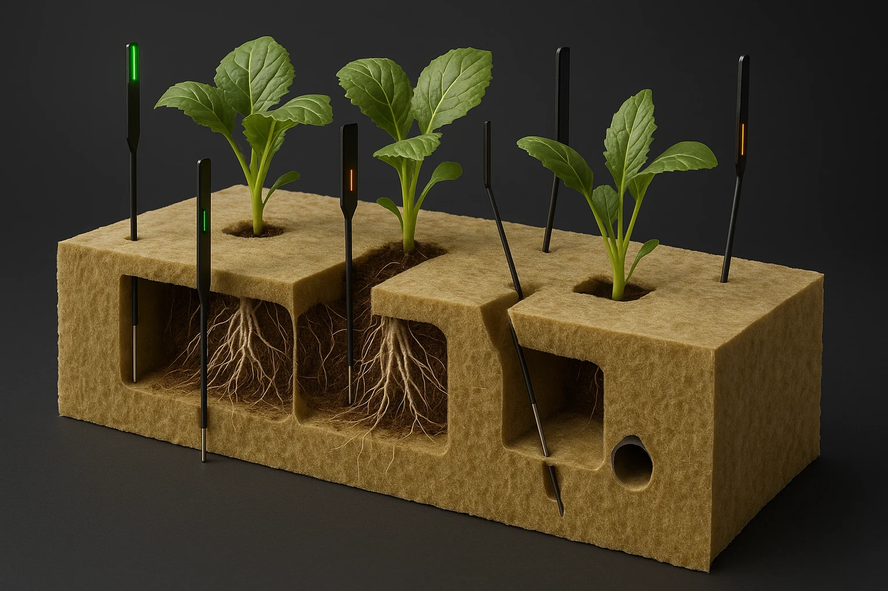
All the roots are in the block. If the block crosses the recovery floor it channels and the dripper cannot fix it[12] — you lose root mass in the only substrate the plant currently occupies, and the transplant stalls exactly when it should be accelerating. The reference grower's words: “if you're not watering that cube, it doesn't matter about the slab… you got to keep that cube hydrated so you don't lose your root base.”[14]
Slab prep: level, soak, charge, slit
Everything downstream inherits the slab's starting state. Get it wrong here and you chase it for eight weeks.
Level, soak, charge and slit
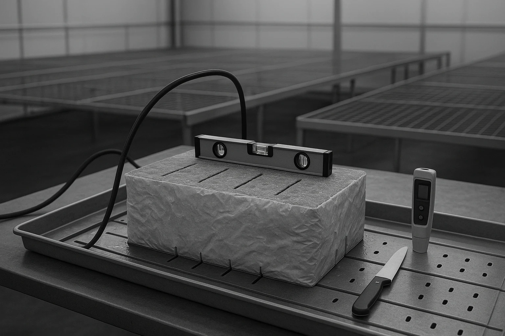
- 1Level the traysWC stratifies with height — a tray tilted along its 7.6 m run becomes a wet end and a dry end that no schedule can equalise. Check fall with a level before slabs go down; only the deliberate drain fall should remain.
- 2Fill the slabs inside the wrapperFill through the block holes with veg-strength feed — balanced feed at EC 2.5–3.0, pH ~5.5 — until the slab is visibly full with no air pockets, and let it sit 24 hours.[2] The soak wets every fibre (dry stone wool is hydrophobic enough to channel from day one if skipped) and pre-charges the slab so roots enter feed, not water.
- 3Cut drain slits after the soak, in stagesSmall slits first — 1–2 cm at 45° at the slab's lowest edge, offset from block positions, two or three per slab. Grodan cuts drainage in stages deliberately: a wetter slab early aids rooting-in; enlarge slits later when the generative phase needs faster drainage.[3] After slitting, the slab settles from saturation to field capacity.
- 4Open the wrapper under each block positionCut the plastic slightly smaller than the block footprint so fibre touches fibre with no plastic bridging — hydraulic contact is the whole mechanism, and a strip of wrapper under one corner of a block is an invisible rooting failure.
- 5Place blocks with full flat contactBlocks go down once roots are visible at the Hugo base, block at field capacity. Press down gently — no rocking. Contact area determines how fast the slab pulls the block dry and how easily roots cross the boundary.[1]
Rooting-in: measured shots, plant-led exit
Keep the block supplied while roots cross into the slab, but do not turn a published starting recipe into an unobserved timer.
The percentages below use the block plus that plant's allocated share of slab, approximately 7.35 L under the working dimensions. Treat 2-6% as the outside shot-size guardrail and 3-5% as the normal starting band after root-in. Recalculate from the wrapper dimensions and caught flow.[13][16]
- 1Pre-charge and drain correctlyFully hydrate the slab with balanced feed, let it soak, then open the drain-side slit. Place a fully hydrated block with complete fibre contact. Record block weight or VWC, slab VWC and feed EC at transplant.
- 2Days 1-3: bridge irrigationBegin about one hour after lights-on. Apply two measured 3-5% shots about 20 minutes apart. Add later shots only while the block is demonstrably losing water and each event produces a clean wet-up response. At 7.35 L per plant, 3-5% is about 221-368 mL; use the configuration table for nominal runtimes and the catch test for the programmed runtime.
- 3Remove late shots as roots enterOnce roots are visibly entering the slab, remove later events before removing the morning bridge. Let the combined root zone begin a controlled dryback. A published transition value is a reference point, not a universal sensor number.
- 4Exit on evidenceStart normal P1 only when roots have entered the slab, daily uptake is visible in the trace, all outlets pass a catch test, and the slab can wet toward measured field capacity without the block remaining stagnant. The slab sensor informs the decision; it does not run the early events by itself.
Rooting-in progression and exit
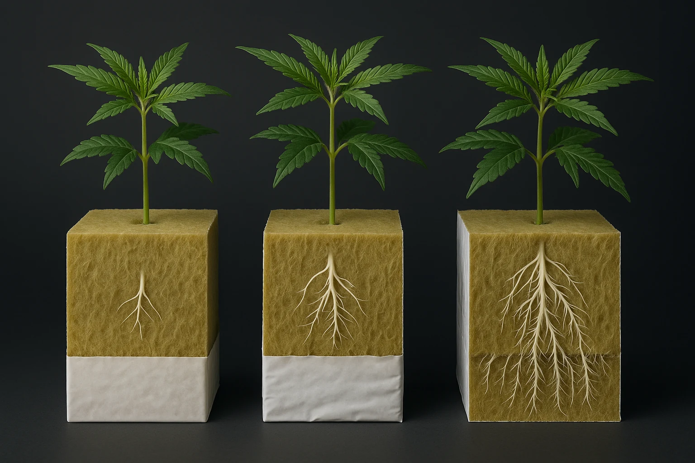
A single ring-fed outlet is simple, but a blockage gives that plant zero water. Prefer two independently catch-tested outlets where the wetting hardware supports them, or make visible flow at every ring part of the daily SOP and alarm on zone-flow deviation.
P0-P3 on the controller
| Phase | Purpose | Operating rule |
|---|---|---|
| P0 | Lights-on transpiration before irrigation | Allow 1-5% additional relative dryback after lights-on, normally 30 minutes to two hours. End early at the recovery floor or a climate/feed interlock. |
| P1 | Refill without channelling | Use 2-6% substrate-volume shots, normally 3-5%, spaced 15-30 minutes apart. Stop at the stage-specific peak and runoff response. |
| P2 | Maintain VWC and steer root-zone EC | Add or extend P2 to lower EC and dryback. Remove or shorten P2 to raise EC and dryback. This is the main fast EC lever. |
| P3 | Overnight oxygenation and dryback | Stop routine irrigation and allow the programmed dryback. Dark-period irrigation is rescue-only when the recovery floor or plant safety requires it. |
P0–P3 substrate states
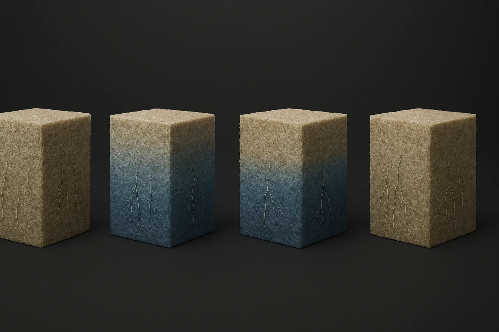
Peak at or slightly above measured field capacity, use the larger end of the validated shot band, add P2 events, and target 8-16% runoff. The objective is lower root-zone EC and a smaller dryback.
Peak at or below field capacity, use the smaller end of the shot band, shorten the irrigation window, and target 1-7% runoff. The objective is higher root-zone EC and a larger dryback.
A 3-5% normal shot on the assumed 7.35 L allocation is about 221-368 mL per plant. The outside 2-6% guardrail is about 147-441 mL. Runtime depends on total measured flow per plant, not the label on one emitter.[13]
Model curves for comparison
Daily VWC and pore-water EC trace
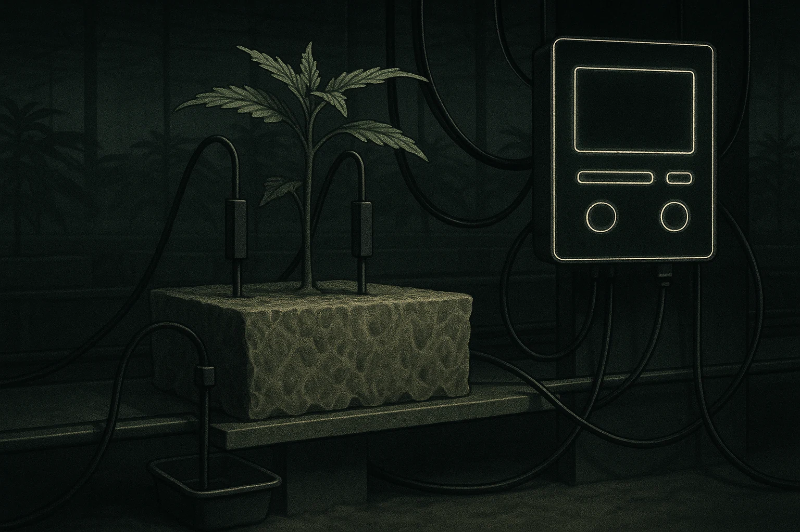
Veg to chop: the operating arc
Set flowers early, bulk after stretch, then finish with a lower root-zone EC and a larger controlled dryback.
Vegetative, setting, bulking and finish arc
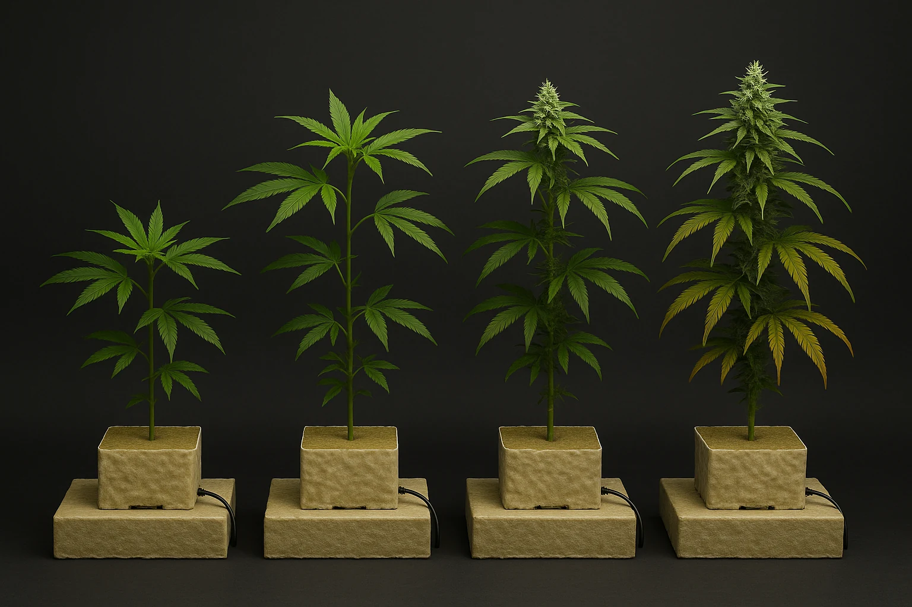
| Stage | Steer | Peak and runoff | Controller dryback | Root-zone EC | Switch signal |
|---|---|---|---|---|---|
| Established veg | Vegetative | At/above measured field capacity; 8-16% runoff | 10-15 points | 3-5 | Roots established, repeatable uptake, plant ready to flip |
| Flower setting, nominal days 1-21 | Generative | At/below field capacity; 1-7% runoff | Start near 15 points and move toward 20-25 over the first three weeks; never cross the recovery floor | 5-10 | Vertical stretch has clearly slowed or stopped |
| Flower bulk, nominal days 22-42 | Vegetative | At/above field capacity; 8-16% runoff | 10-15 points | 3.5-6 | Flower expansion slows and ripening signals dominate |
| Finish, normally final 10-14 days | Lower EC plus generative dryback | At/below field capacity; 1-7% unless correcting excess EC | 20-25 points initially; extend only from cultivar data and stay above the floor | 3-4 | Harvest readiness, not a fixed day number |
| These are starting bands assembled from the cited technical sources. Advance one lever at a time and compare equivalent VWC points in the daily trace. | |||||
Sipkoi: simple measurements around a three-plant slab
A commercial grower described a deliberately simple slab-irrigation system on the We The Growers podcast. It is useful as an operating example, not as a recipe to copy unchanged.[15]
Three-plant measurement and runoff layout
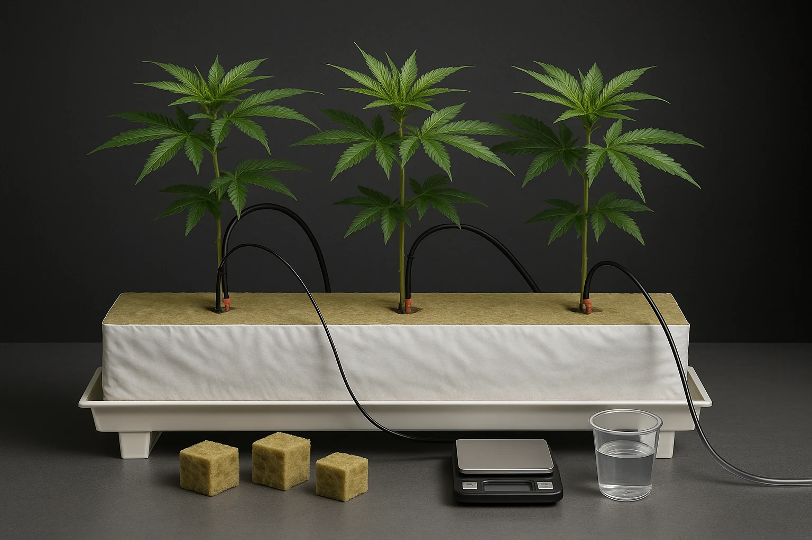
Plants move from 4 × 4 × 2.5 in blocks onto pre-saturated slabs after about 16 days of veg. One whole slab is raised over a runoff tray; applied and drained volume are divided by its three plants. Staff report daily in/out volume and check runoff pH and EC once or twice weekly.
For the first 48 hours on slabs, the reported starting program is about 12 lights-on events, two minutes each through a 0.5 GPH outlet. The grower then allows a hard three-to-four-day dryback before building toward full irrigation. Around day 14, a typical reported pattern is 10-12 four-minute events, with frequency adjusted to cultivar demand and observed drainage.
- Measure a complete three-plant slab instead of guessing runoff from pump time.
- Keep event duration stable after validation and tune frequency to uptake and drainage.
- Use a scheduled room walk to confirm slabs are wetting and drainage has begun.
- Record deviations when a room or cultivar drinks differently, then use that record for the next cycle.
- The 48-hour wetting period and following multi-day dryback are aggressive and need block/slab VWC, root inspection and a recovery floor.
- One outlet per plant has no emitter redundancy.
- Exact feed EC, runoff and frequency belong to that facility's media, climate, light and cultivar.
- Physical checks complement sensors; they do not justify ignoring a verified fault in either system.
Podcast timestamps: slab placement 27:33-28:12; slab-scale runoff collection 31:43-32:33; initial flower irrigation 39:44-41:12; first-three-week adjustment 48:55-53:37.[15]
Correct EC first; use a defined finish
There is no blanket day-45 dilution and no automatic plain-water week.
Root-zone EC correction and defined finish
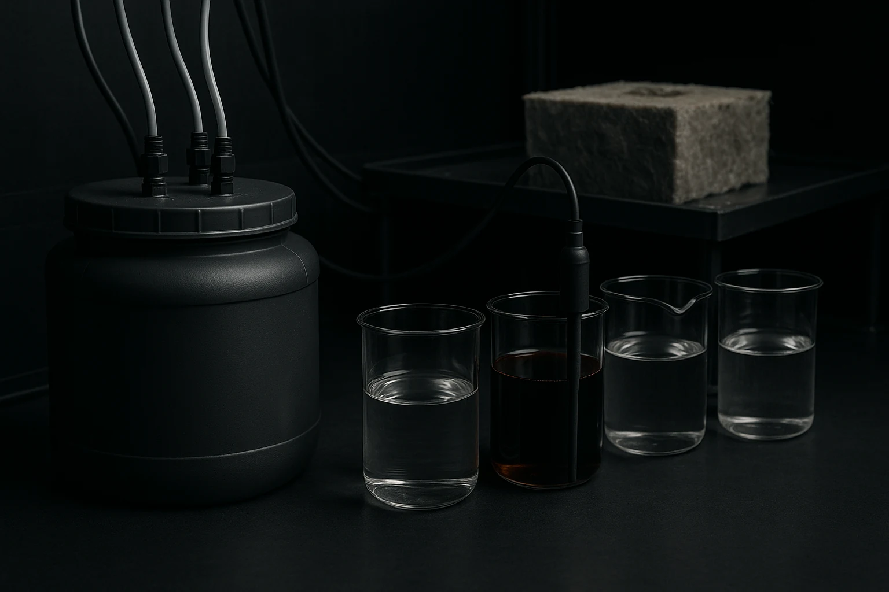
- 1Verify a high EC readingCompare root-zone EC at equivalent VWC. A drier substrate reads higher even without added salt. Confirm with representative runoff volume and EC before changing the program.
- 2Correct excess EC with controlled leachingUse balanced feed whose EC is below the root-zone EC, increase P2 and runoff temporarily, and watch the next complete trace. Stop when root-zone and runoff EC return toward the stage band. Do not stack a feed-EC change and a timing change on the same day unless plant safety requires it.
- 3Final two weeksUse the cited two-part finish procedure at the scheduled EC rather than tapering by default. Recheck pH after the component change.[17]
- 4Final clean-water period
Climate defines how fast the irrigation curve moves
Irrigation targets only make sense beside PPFD, VPD and temperature. Published bands are operating envelopes, not permission to force a stressed cultivar to the top edge.[13]
Climate demand and irrigation response
| Stage | Air temperature | RH | VPD | PPFD |
|---|---|---|---|---|
| Veg | 22.2-27.7°C | 58-75% | 0.8-1.0 kPa | 300-600 |
| Flower stretch | 25.5-27.7°C | 60-72% | 1.0-1.2 kPa | 600-1000 |
| Flower bulk | 23.8-26.6°C | 60-70% | 1.0-1.2 kPa | 850-1200 |
| Flower finish | 18.3-22.2°C | 50-60% | 1.2-1.4 kPa | 600-900 |
After PPFD, under-canopy light, VPD or CO2 changes, expect a new uptake rate. Hold the steering target steady long enough to observe the new curve before deciding the irrigation program is wrong.
Compare paired sensors and representative runoff along the 7.6 m run. If front and back diverge, inspect airflow, drain fall, slit geometry and outlet output before steering the whole row around one bad position.
Air delivery and thermal scenarios
Troubleshooting
Symptom-to-cause troubleshooting
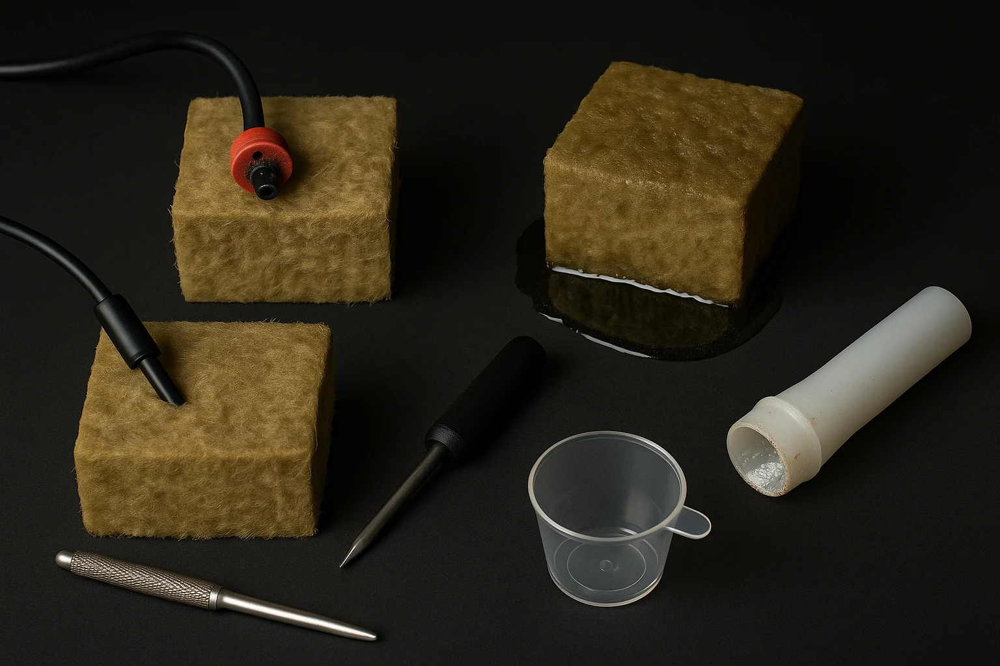
| Symptom | Likely cause | First action |
|---|---|---|
| Runoff high, VWC barely rises | Channelling, poor block-slab contact, or emitter placement | Inspect physically; slow the event or hand-rewet with balanced feed; do not increase volume blindly |
| Root-zone EC climbs day over day outside the stage band | Too little leaching, too much dryback, feed mismatch, or excessive demand | Verify at equal VWC, check feed EC and climate, then add P2/runoff with one bounded change |
| Root-zone EC falls below target | Peak/runoff too high for the steering phase | Reduce P2 or peak slightly and observe one full day |
| P1 never reaches its target | Target above achievable Vmax, blocked emitter, bad flow assumption, or undersized ramp | Catch-test, verify Vmax and substrate volume, then adjust the model |
| Fresh transplants stall while the slab stays wet | Hugo is draining into the slab faster than roots can replace uptake | Resume measured bridge shots to the block and inspect roots/contact; do not run the slab sensor as the sole trigger |
| Dryback suddenly deepens | Missed event or demand change from PPFD, VPD, CO2 or airflow | Check logs and climate first; compensate with P2 only after identifying the cause |
| One plant wilts while neighbours track normally | Single-emitter failure or local contact problem | Restore flow and hand-rescue that block with balanced feed if required |
Combined setpoints
Combined operating-setpoint dashboard
- Convert relative dryback to controller points before programming it.
- Change from setting to bulk when stretch ends, not because a calendar page turned.
- Use P2 and runoff as the fast root-zone EC control; keep feed EC as the slower recipe lever.
- Verify shot duration from actual outlet flow and total assigned substrate volume.
- Make one bounded change, observe a complete grow-day, then decide again.
References
- Grodan (ROCKWOOL Group). The right block–slab interaction ensures healthy plants. Grodan crop guidance. (non-peer-reviewed source) https://www.grodan.com/global/crops/sweet-pepper/the-right-block-slab-interaction-ensures-healthy-plants/
- Grodan (ROCKWOOL Group). Handling and placing of the slabs. Technical sheet TS 3.3. (non-peer-reviewed source) https://www.grodan.com/syssiteassets/downloads/tools--services/english/ts-3-3-handling-the-slabs-en.pdf
- Grodan (ROCKWOOL Group). Cutting drainage holes in stages is good for plants and saves water. Grodan knowledge base. (non-peer-reviewed source) https://www.grodan.com/global/knowledge/root-zone-management/irrigation-and-nutrients/Cutting-drainage-holes-in-stages-is-good-for-plants-and-saves-water/
- Grodan (ROCKWOOL Group), with B. Nikaj; trials with Wageningen University & Research (2020–2022). Grodan research reveals new insights into optimal irrigation strategy for large-scale production of medicinal crops. Whitepaper. (non-peer-reviewed source) https://www.grodan.com/
- Bougoul S, Boulard T (2006). Water dynamics in two rockwool slab growing substrates of contrasting densities. Scientia Horticulturae 107(4):399–404. https://doi.org/10.1016/j.scienta.2005.11.007
- Bougoul S, Ruy S, de Groot F, Boulard T (2005). Hydraulic and physical properties of stonewool substrates in horticulture. Scientia Horticulturae 104(4):391–405. https://doi.org/10.1016/j.scienta.2005.01.018
- da Silva FF, Wallach R, Polak A, Chen Y (1998). Distribution of nutrients and water in rockwool slabs. Scientia Horticulturae 72(3–4):277–285. https://www.sciencedirect.com/science/article/abs/pii/S0304423897001441
- International Society for Horticultural Science (ISHS). Utilizing the HYDRUS model as a tool for understanding soilless substrate water dynamics. Acta Horticulturae 1168. https://www.ishs.org/ishs-article/1168_41
- Caplan D, Dixon M, Zheng Y (2019). Increasing inflorescence dry weight and cannabinoid content in medical cannabis using controlled drought stress. HortScience 54(5):964–969. https://doi.org/10.21273/HORTSCI13510-18
- Malik M, Tlustoš P (2025). Soilless growing media for cannabis cultivation. Agriculture 15(18):1955. https://www.mdpi.com/2077-0472/15/18/1955
- Nemali KS, van Iersel MW (2006). An automated system for controlling drought stress and irrigation in potted plants. Scientia Horticulturae 110(3):292–297. https://doi.org/10.1016/j.scienta.2006.07.009
- Owen J, Norden D (Profile Products). Understanding drainage in horticultural growing media. Greenhouse Management. (non-peer-reviewed source) https://www.greenhousemag.com/article/growing-media-defining-drainage-improve-substrate/
- Athena Agriculture. Precision Irrigation Strategy, metric edition, document A01.002. (manufacturer technical guidance) Official Athena procedure
- We The Growers podcast, E.37 — Bones Grows (ZBRA / Wow Town). Practitioner discussion of block-on-slab irrigation and root-zone management. (non-peer-reviewed practitioner source) Official episode
- We The Growers podcast, E.31 — Sipkoi, published 13 August 2024. Slab placement 27:33-28:12; runoff collection 31:43-32:33; initial flower irrigation 39:44-41:12; first-three-week adjustment 48:55-53:37. (non-peer-reviewed practitioner source; timestamps checked against episode captions) Official episode
- Whipple J. The CCI Black Book, first edition, 2023, Garden Management chapter, pp. 56-63. (commercial cultivation guidance) Publisher
- Athena Agriculture. Fade Procedure. Replace Core with Fade for the final two weeks, feed Fade + Bloom at full EC, then use Cleanse in RO water for the final 1-3 days, one day in rockwool. (manufacturer product procedure) Official Athena Fade procedure
Citations marked in-text as [n] map to this list. Verify claims against the primary sources before relying on them.